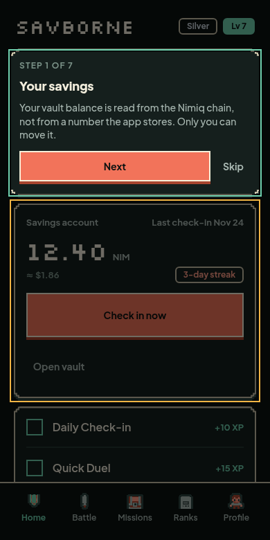

Review renders for the six-change polish batch. Fixture data throughout
(Kemi, 12.40 NIM, Mint Wraith); every /api call was intercepted, nothing
touched production. Before images are main at bd5ac4aa.
States marked new did not exist on main.
The one that matters: the awards panel now draws the real item tiles and badge art (earned mint, removed coral) instead of the old text glyph list.
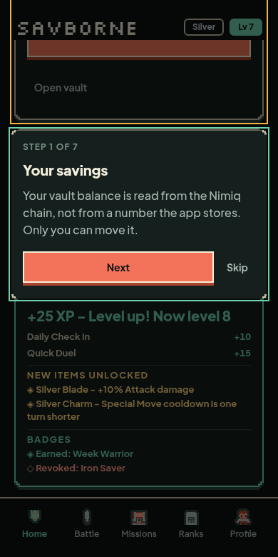
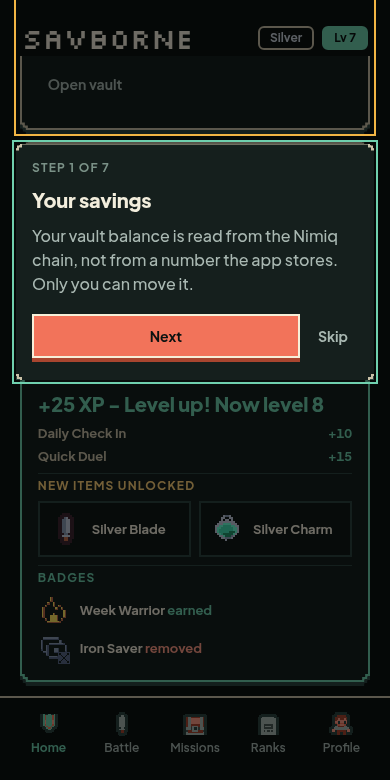
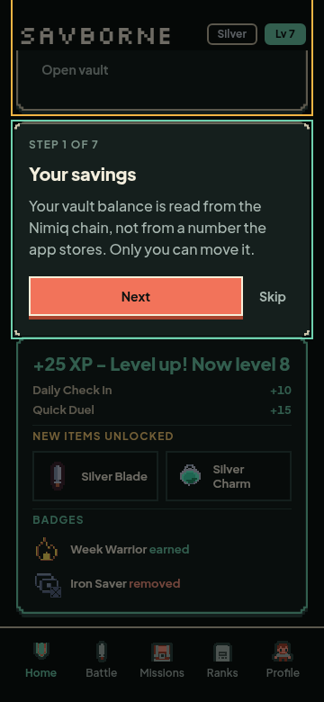
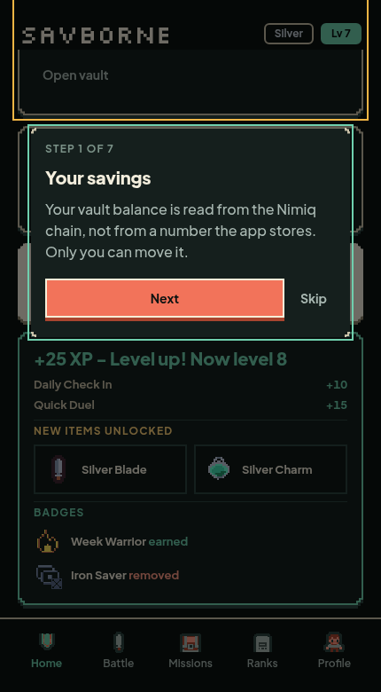
A fixed clock at 20:30 UTC with the day unclaimed. The cue is coral, sentence case, and only exists inside the six-hour window.
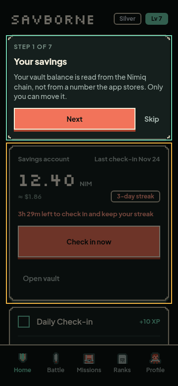
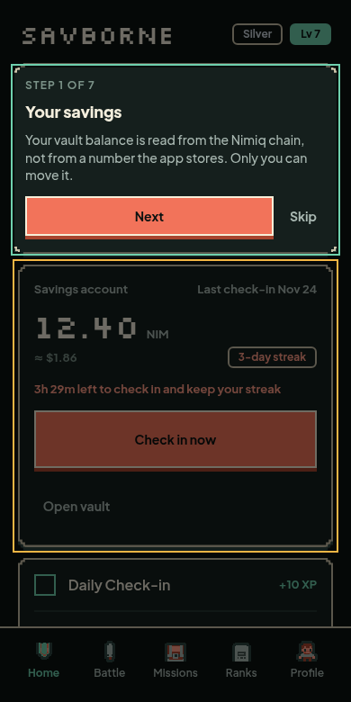
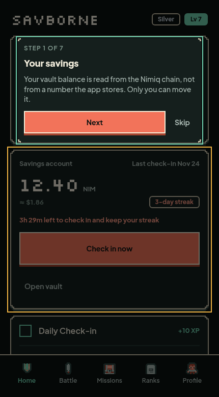
Revoked badges render with the shipped removed-state drawings instead of a comma-separated name list.
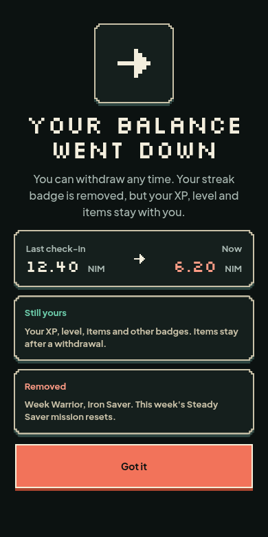
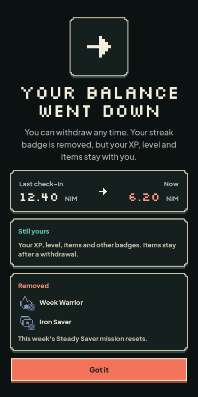
Ledger Scroll and Golden Crown stay visible but can no longer spend a turn on nothing: disabled rows, no mint border, a plain "No battle effect".
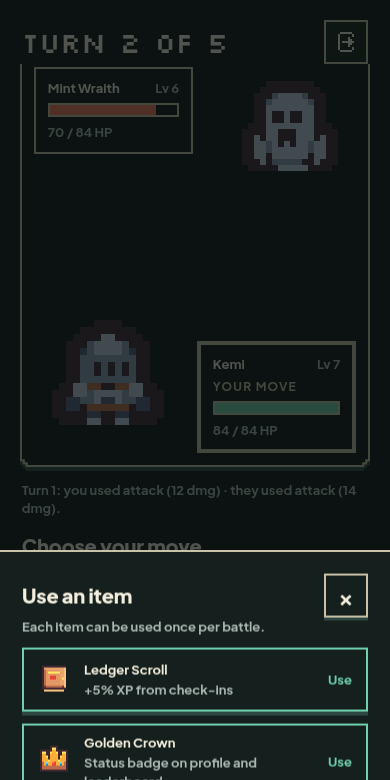
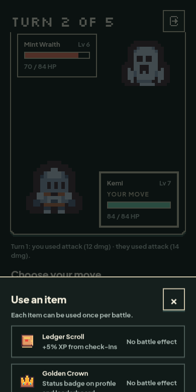
The pre-baked gilt rim fires on the fighter an effect was applied to, caught mid-beat from a live poll transition. Also visible on your own sprite when you defend.
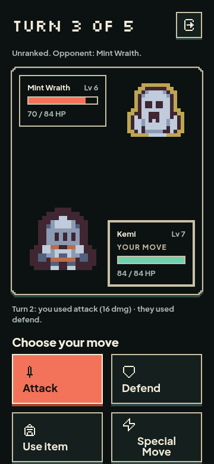
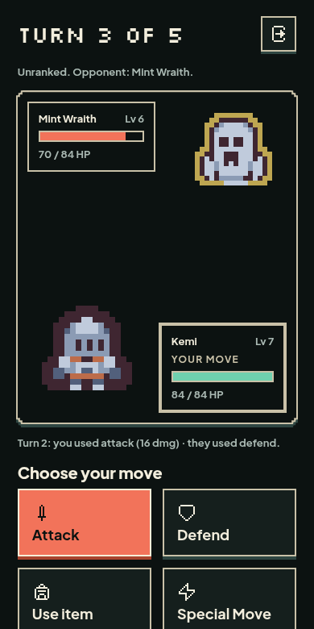
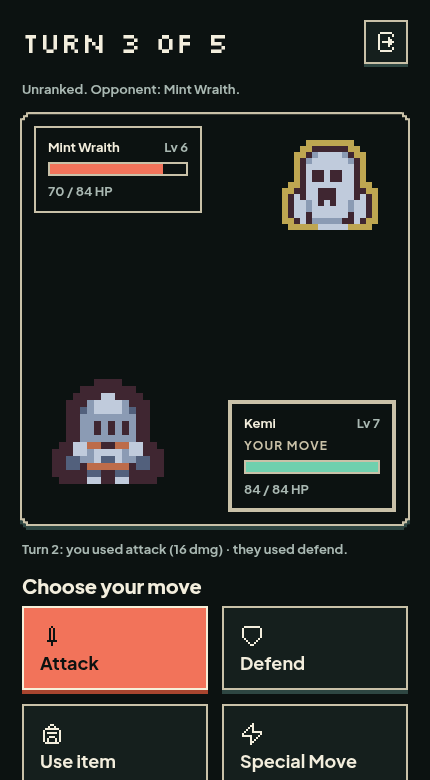
No cue, no awards: the savings card, missions and battle card as on main, so you can see nothing else moved.
